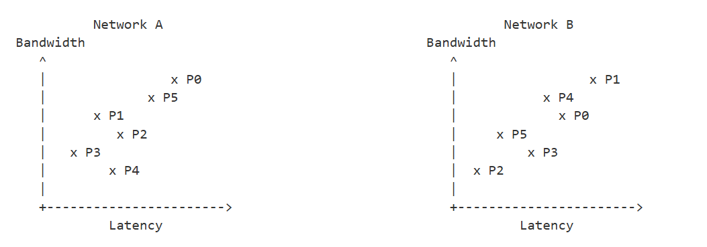

Tutorial: Turning on various optimization on HTP and HTP MCP Backends¶
The following tutorial will explain how to turn on and prepare optimized graphs on HTP and HTP MCP Backends.
The sections of the tutorial are as follows:
Optimization levels¶
For automotive, HTP supports different graph optimization levels. Level 3 optimization (O=3) may yield the most optimal graph. However, experimentation is required as the highest level of optimization is not always guaranteed to give the best performance.
When creating serialized context binary with qnn-context-binary-generator, backend extension parameters can be specified using in the “–config_file” argument. Its full documentation can be found in QNN HTP Backend Extensions section.
As shown in the sample HTP backend JSON config below, to enable a graph for O=3, specify the optimization “O” value as 3:
htp_context.json
{
"graphs": [
{
"vtcm_mb": 8,
"O": 3,
"graph_names": [
"qnn_model"
]
},
],
"devices":[
{
"dsp_arch": "v68",
"soc_id": 62,
"pd_session": "unsigned",
"device_id": 0
}
]
}
When preparing a graph using O=3, specifying the correct device “soc_id” matching the target to use could turn on additional algorithm(s) which may further improve inference performance. Please consult the above QNN HTP TARGET CONFIG TABLE to select the appropriate DSP architecture (“dsp_arch”) value and SoC ID (“soc_id”) value.
In terms of C API, the value 3 for “O” is from QNN_HTP_GRAPH_OPTIMIZATION_TYPE_FINALIZE_OPTIMIZATION_FLAG field of exhale_struct_structQnnHtpGraph__OptimizationOption__t. More details can be found in QNN HTP Backend API section.
To prepare a context binary with HTP optimization related parameters, use qnn-context-binary-generator with –config_file argument and give path to htp_context.json.
${QNN_SDK_ROOT}/bin/x86_64-linux-clang/qnn-context-binary-generator
--backend ${QNN_SDK_ROOT}/lib/x86_64-linux-clang/libQnnHtp.so
--model model.so
--binary_file model.serialized
--profiling_level basic
--config_file htp_context.json
Similarly for HTP MCP backend, to enable a graph for O=3, specify the optimization “O” value as 3:
graph_prepare (2 files)
graph_prepare.json:
{ "backend_extensions": { "shared_library_path": "libQnnHtpMcpNetRunExtensions.so", "config_file_path" : "graph_prepare.conf" } }
graph_prepare.conf (linked to from graph_prepare.json above):
{ "graphs": [ { "graph_names": [ "qnn_model" ], "O": 3 } ] }
Next, to generate the serialized context binary, specify the graph_prepare.json file using the –config_file flag as follows:
$ cd ${QNN_SDK_ROOT}/examples/Models/InceptionV3
$ cp ${QNN_SDK_ROOT}/lib/hexagon-v68/unsigned/libQnnHtpMcpV68.elf network.elf
$ ${QNN_SDK_ROOT}/bin/x86_64-linux-clang/qnn-context-binary-generator \
--backend ${QNN_SDK_ROOT}/lib/x86_64-linux-clang/libQnnHtpMcp.so \
--model ${QNN_SDK_ROOT}/examples/Models/InceptionV3/model_libs/x86_64-linux-clang/libInception_v3_quantized.so \
--config_file graph_prepare.json \
--binary_file Inception_v3_quantized_qpc.serialized
P points¶
Overview¶
P points are an advanced O=3 optimization feature that may yield better
performance for your model. They are available exclusively when O=3
(optimization level 3) is enabled and give you a way to experiment with
non-default compiler configurations when preparing a context binary.
Each P value selects a different pre-defined point in the compiler’s internal configuration space, adjusting parameters that affect how the HTP executes operations — for example, tradeoffs between latency and DRAM bandwidth.
The best P point for a given model would depend on your latency requirements and DDR bandwidth and can be chosen by experimenting across all possible P points. There is no universal “best” P value, as the right choice depends on the characteristics of your network.
Once a graph compiles successfully with a P point, the execution output is bit-accurate with a graph compiled without P points.
Valid values¶
Valid values for P point are: 0 (default value that does not change any parameters), 1, 2, 3, 4, 5, 6, 8, 13, 15, 16, 17, 19, 20, 21, 22, 23.
In other words, the valid values are 0 to 23 with the following values excluded: 7, 9, 10, 11, 12, 14, 18.
Note
The set of valid P point values and the behavior of each value may change from release to release. Always re-validate your chosen P value when upgrading to a new SDK version.
Workflow: where P points fit in the lifecycle¶
P points affect the offline graph preparation step only. The workflow is:
Convert your model to a QNN model (
.soor.bin) usingqnn-tensorflow-converter,qnn-onnx-converter, or equivalent. (P points have no effect at this stage.)Prepare the context binary using
qnn-context-binary-generatoron x86, withO=3and your chosenPvalue in the HTP backend extensions config. This is where P points take effect — they change how the compiler generates the serialized context binary.Test the prepared graph on your target hardware before deploying to production. Because P point behavior can vary by network, always validate functional correctness and performance after changing P.
Deploy the context binary to the target device. At runtime, the P value has already been baked into the binary — no runtime flag is needed.
Caveats and warnings¶
Always test before deploying. When a model is prepared using a P point, the prepared graph must be validated for both performance and functional correctness before production deployment.
The supported set of P point values may change from release to release.
The behavior of a given P point value may change from release to release.
A given network may fail to prepare or execute correctly for a given P point value.
P points are independent. Unlike O levels, where higher values generally yield better performance at the cost of longer compile time, there is no ordering or relationship between P point values. P=2 is not “better” or “worse” than P=1 in any general sense.
P only takes effect when O=3. Setting
PwithoutO=3has no effect.Specifying more than one P point results in undefined behavior. The outcome is not guaranteed and may change across releases.
Performance varies by network. A P value that improves one model may have no effect or degrade performance on another. See Sample performance difference between two networks as reference.
Sample performance difference between two networks

Setting P points (HTP backend)¶
P points are set via the finalize_config option in the HTP backend
extensions config, which corresponds to
QNN_HTP_GRAPH_CONFIG_OPTION_FINALIZE_CONFIG in
QnnHtpGraph_CustomConfig_t.
The following example enables P=1 with O=3 on the HTP backend:
htp_context.json
{
"graphs": [
{
"graph_names": [
"<network-name>"
],
"O": 3,
"vtcm_mb": 8,
"hvx_threads": 4,
"finalize_config": {"P": 1}
}
],
"devices": [
{
"device_id": 0,
"soc_id": 62,
"dsp_arch": "v68"
}
]
}
To prepare a context binary with HTP optimization related parameters, use qnn-context-binary-generator with –config_file argument and give path to htp_context.json.
${QNN_SDK_ROOT}/bin/x86_64-linux-clang/qnn-context-binary-generator \
--backend ${QNN_SDK_ROOT}/lib/x86_64-linux-clang/libQnnHtp.so \
--model model.so \
--binary_file model.serialized \
--profiling_level basic \
--config_file htp_context.json
Setting P points (HTP MCP backend)¶
For the HTP MCP (multicore) backend, finalize_config is passed
through the graph_prepare.conf file and corresponds to
QNN_HTP_MCP_GRAPH_CONFIG_OPTION_FINALIZE_CONFIG in
QnnHtpMcpGraph_CustomConfig_t.
graph_prepare.json
graph_prepare.json:
{ "backend_extensions": { "shared_library_path": "libQnnHtpMcpNetRunExtensions.so", "config_file_path" : "graph_prepare.conf" } }
graph_prepare.conf:
{ "graphs": [ { "graph_names": [ "qnn_model" ], "O": 3, "finalize_config": {"P": 1} } ] }
Next, to generate the serialized context binary, specify the graph_prepare.json file using the –config_file flag as follows:
$ cd ${QNN_SDK_ROOT}/examples/Models/InceptionV3
$ cp ${QNN_SDK_ROOT}/lib/hexagon-v68/unsigned/libQnnHtpMcpV68.elf network.elf
$ ${QNN_SDK_ROOT}/bin/x86_64-linux-clang/qnn-context-binary-generator \
--backend ${QNN_SDK_ROOT}/lib/x86_64-linux-clang/libQnnHtpMcp.so \
--model ${QNN_SDK_ROOT}/examples/Models/InceptionV3/model_libs/x86_64-linux-clang/libInception_v3_quantized.so \
--config_file graph_prepare.json \
--binary_file Inception_v3_quantized_qpc.serialized
HTP Performance Estimates¶
QNN can provide performance estimates for a graph using operator costs (i.e. execution cycle predictions) to simulate the target hardware. These estimates project the HTP performance and a confidence level for a graph. The information provided by the estimates is provided “as is” with no warranty of any kind. Every effort has been made to ensure the accuracy of the information provided by the estimates.
However, there are no representations being made regarding the use of the estimates provided in terms of its correctness, accuracy vs. silicon, reliability, or otherwise. The estimates may vary and even show regressions on a per-graph basis across QNN releases. The information provided by the estimates is provided for informational purposes only and should not be relied upon for any other purpose.
The following is a non-exhaustive list of assumptions and approximations made for the performance estimates:
Performance estimates may vary across SDK versions for a graph.
Each execution cycle prediction of an op is perturbed by an amount that is reflective of the actual errors we see while training models used for calculating the estimates. The whole graph is then simulated using the lower and upper execution cycles estimate for each op to produce the overall lower and upper estimates respectively. The lower and upper estimates provided by these performance estimates are approximations of the simulation accuracy vs. target silicon; they are not accuracy error bounds.
Performance estimates may assume kernel operator costs for operators which it currently does not model, which includes all operators derived from ‘custom ops’.
Performance estimates assumes burst performance mode, the HTP has full bandwidth to the DDR and that no other cores are using the DDR during the execution of the graph being simulated.
This is may not be true in reality, as the HTP has to share the DDR with other cores and other devices on the SoC (e.g. CPU, GPU, camera, etc.), which may or may not be active during the execution of the graph.
Generating performance estimates:
Generation of performance estimates requires the correct soc_id in the HTP backend extensions config. For e.g., the following json file has soc_id = 52 which is the soc_id for either the SA8650 or the SA8775 target:
htp_context.json
{
"graphs": [
{
"graph_names": [
"graph1_name"
],
"vtcm_mb": 8,
"hvx_threads": 4
}
],
"devices": [
{
"device_id": 0,
"soc_id": 52,
"dsp_arch": "v73"
}
]
}
When running the qnn-context-binary-generator on HTP backend, specify the profiling level parameter and the htp_context.json (containing the right soc_id).
$ ${QNN_SDK_ROOT}/bin/x86_64-linux-clang/qnn-context-binary-generator \
--backend ${QNN_SDK_ROOT}/lib/x86_64-linux-clang/libQnnHtp.so \
--model model.so \
--binary_file model.serialized \
--profiling_level basic \
--config_file htp_context.json
Passing the HTP profiling reader (–reader libQnnHtpProfilingReader.so) to qnn-profile-viewer is important to get the correct layout of the performance estimates.
$ ${QNN_SDK_ROOT}/bin/x86_64-linux-clang/qnn-profile-viewer \
--input_log output/qnn-profiling-data.log \
--reader libQnnHtpProfilingReader.so
Similarly, use the following commands for HTP MCP backend:
$ ${QNN_SDK_ROOT}/bin/x86_64-linux-clang/qnn-context-binary-generator \
--backend ${QNN_SDK_ROOT}/lib/x86_64-linux-clang/libQnnHtpMcp.so \
--model model.so \
--binary_file model.serialized \
--profiling_level basic
$ ${QNN_SDK_ROOT}/bin/x86_64-linux-clang/qnn-profile-viewer \
--input_log output/qnn-profiling-data.log \
--reader libQnnHtpMcpProfilingReader.so
Performance estimate output:
Simulated (Accelerator exec cycles): Simulated execution cycles.
Simulated (Accelerator exec cycles (lower estimate)): Lower estimate of the simulated execution cycles.
Simulated (Accelerator exec cycles (upper estimate)): Upper estimate of the simulated execution cycles.
Bandwidth Stats per HTP in bytes:
Input Fill: Total reads from DDR for graph input related tensors (weights, bias, activations). This value counts all bytes of operators which do not have predecessors.
Intermediate Fill : Total reads from DDR for compiler generated data transfer to satisfy VTCM size constraints. This value counts all bytes of compiler generated fill operators which have predecessors and successors and originate on the same HTP.
Intermediate Spill : Total writes to DDR for compiler generated data transfer to satisfy VTCM size constraints. This value counts all bytes of compiler generated spill operators which have predecessors and successors and originate on the same HTP.
Inter HTP Fill : Total reads from DDR for fills which were generated by a different HTP core. This value counts all bytes of compiler generated fill operators which do not have a predecessor, but have a successor.
Inter HTP Spill : Total reads from DDR for spills which were generated by a different HTP core. This value counts all bytes of compiler generated spill operators which do not have a successor, but have a predecessor.
Output Spill : Total writes to DDR for graph output related tensors. This value counts all bytes of operators which do not have successors.
Sample profiler output Finalize Stats:
With performance estimates:
Finalize Stats:
Accelerator (finalize) time : 193364 us
Performance Estimates :
Mode : Burst
Simulated (Accelerator exec cycles) : 991608 cycles
Simulated (Accelerator exec cycles (lower estimate)) : 921188 cycles
Simulated (Accelerator exec cycles (upper estimate)) : 1094620 cycles
Bandwidth Stats :
HTP ID : 0
Input Fill : 24524800 bytes
Intermediate Fill : 0 bytes
Intermediate Spill : 0 bytes
Inter HTP Fill : 0 bytes
Inter HTP Spill : 0 bytes
Output Spill : 2048 bytes
Without performance estimates:
Finalize Stats:
Accelerator (finalize) time : 193364 us